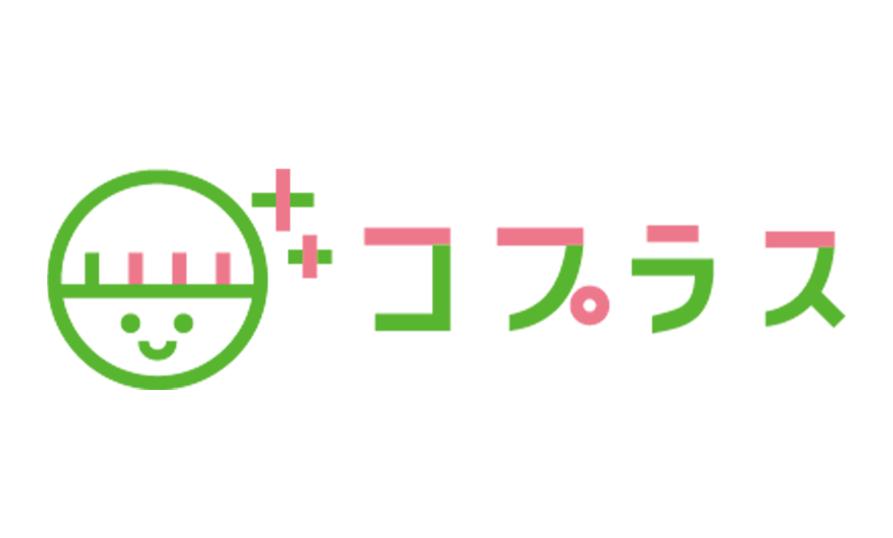

REASON 01
医療×教育×保育の
有資格者が多数在籍
医療・教育・保育それぞれの分野で資格を持つスタッフが多数在籍。多角的な視点でお子さま一人ひとりの発達を丁寧に支援します。

個性・個人・個別を大切に、お子さまと保護者を共に支える。
有資格者が多数在籍する、文京区の多機能型児童通所支援施設。
Why Choose Us
REASON 01
医療・教育・保育それぞれの分野で資格を持つスタッフが多数在籍。多角的な視点でお子さま一人ひとりの発達を丁寧に支援します。
REASON 02
「受給者証って何？」という方も安心。コプラスには相談支援もあるため、受給者証の取得から利用開始までスムーズにサポートできます。
REASON 03
お子さま一人ひとりに丁寧に向き合うため、個別支援（1対1または1対2）を基本の支援方針としています。集団の中でも、確かな関わりを大切にします。
Services
対象：未就学児（0〜6歳）
専門スタッフが遊びや活動を通じて、言語・運動・コミュニケーションなど、お子さまの発達を総合的にサポートします。個別支援計画に基づいたプログラムで、一人ひとりのペースを大切にします。
対象：7〜18歳（小学生〜高校生）
学校終わりや夏休みなど、安心して過ごせる居場所を提供。療育プログラムと余暇活動をバランスよく実施し、社会性や生活スキルの向上を支援します。
FAQ
コプラスには相談支援もあるため、受給者証の取得手続きについてもスムーズにサポートできます。「まだ受給者証がない」「何から始めたらいいか分からない」という方も、まずはお気軽にご相談ください。
はい、随時受け付けています。「まずは雰囲気を見てみたい」という方のご見学も大歓迎です。お問い合わせフォームまたはお電話にてご予約ください。体験利用も可能ですのでお気軽にお申し付けください。
児童発達支援は未就学児、放課後等デイサービスは7〜18歳（小学1年生〜高校3年生）を対象としています。多機能型のため、成長に合わせて同じ施設でサービスを継続的に受けることができます。
受給者証をお持ちの場合、利用料の9割が自治体負担となり、ご家庭の負担は原則1割です。また、世帯収入に応じて月額上限額が設定されているため、多くのご家庭で月数千円程度からご利用いただけます。詳しくはお問い合わせください。
現在、送迎は行っておりません。東大前駅（東京メトロ南北線）より徒歩6分、本駒込駅（東京メトロ南北線）より徒歩8分、白山駅（東京メトロ三田線）より徒歩11分と、3路線からアクセスいただけます。
Access
住所
〒113-0023 東京都文京区向丘2-18-8
アドバンス第二ビル 2F
電話
03-5834-7788FAX
03-5834-7789
営業時間
10:00〜18:00 定休日：日曜・祝日
事業所番号
1350500441
東京メトロ南北線
東大前駅
徒歩6分
東京メトロ南北線
本駒込駅
徒歩8分
都営三田線
白山駅
徒歩11分
Contact